复杂网络
2020.04.16 晚记
经过几次项目经历及相关论文的阅读，逐渐对复杂网络的的基本原理有了一定的理解，在此笔记将会汇总一些有关复杂网络、社交网络、社会网络等的一些知识点。
摘要： 随着近几年关于复杂网络（Complex network）理论及其应用研究的不断深入，已有大量关于复杂网络的文章发表在Science，Nature，RL，NAS等国际一流的刊物上，侧面反映了复杂网络已经成为物理界的一个新兴的研究热点。
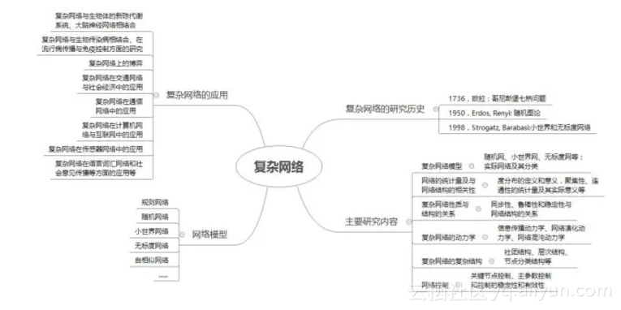
1、发展历史：
国内学者对国外复杂网络理论研究的介绍最早始于汪小帆(2002)发表在国外杂志上的一篇文章**[3]**，文中回顾了近年来国外复杂网络研究所取得的重要成果，其中包括平均路径长度、聚集系数、度分布等网络度量，Internet、www和科学合作网络等现实系统，规则网络、随机网络、小世界网络、无标度网络等网络模型，以及复杂网络上的同步等。
而在国内刊物上对国外复杂网络理论研究的介绍可追溯到朱涵(2003) [4]**在《物理》杂志上发表的“网络‘建筑学”，文章以小世界、集团化和无标度等概念为中心**，介绍了复杂网络的研究进展。
之后，吴金闪等**[5]**从统计物理学的角度总结了复杂网络的主要研究结果，对无向网络、有向网络和加权网络等三种不同网络统计性质研究的现状分别作了综述，对规则网络、完全随机网络、小世界网络和无标度网络等网络机制模型进行了总结，并对网络演化的统计规律、网络上的动力学性质的研究进行了概括。
周涛等(2005)围绕小世界效应和无标度特性等复杂网络的统计特征及复杂网络上的物理过程等问题，概述了复杂网络的研究进展。
刘涛等**[6]从平均路径长度、聚集系数、度分布等复杂网络的统计性质，小世界网络和无标度网络等网络模型等层面简述了复杂网络领域的相关研究**。
史定华**[7]从对网络节点度和度分布的理解入手，对网络分类、网络的演化机理和模型及结构涌现等方面取得的进展进行了总结**。
遗憾的是，目前而言，科学家们还没有给出复杂网络精确严格的定义，从这十几年的研究来看，之所以称其为复杂网络，致少包含以下几层意思：首先，它是大量真实复杂系统的拓扑抽象；其次，它至少在感觉上比规则网络和随机网络复杂，因为我们可以很容易地生成规则和随机网络，但就目前而言，还没有一种简单方法能够生成完全符合真实统计特征的网络；最后，由于复杂网络是大量复杂系统得以存在的拓扑基础，此对它的研究被认为有助于理解“复杂系统之所以复杂”这一至关重要的问题。
2. 复杂网络的统计特征
2.1平均路径长度L
在网络中，两点之间的距离为连接两点的最短路径上所包含的边的数目。网络的平均路径长度指网络中所有节点对的平均距离，它表明网络中节点间的分离程度，反映了网络的全局特性。不同的网络结构可赋予L不同的含义。如在疾病传播模型中L可定义为疾病传播时间，通网络模型中L可定义为站点之间的距离等。
2.2聚集系数C
在网络中，节点的聚集系数是指与该节点相邻的所有节点之间连边的数目占这些相邻节点之间最大可能连边数目的比例。而网络的聚集系数则是指网络中所有节点聚集系数的平均值，它表明网络中节点的聚集情况即网络的聚集性，也就是说同一个节点的两个相邻节点仍然是相邻节点的概率有多大，它反映了网络的局部特性。
2.3度及度分布
在网络中，点的度是指与该节点相邻的节点的数目，即连接该节点的边的数目。而网络的度
2.4介数
包括节点介数和边介数。节点介数指网络中所有最短路径中经过该节点的数量比例，边介数则指网络中所有最短路径中经过该边的数量比例。介数反映了相应的节点或边在整个网络中的作用和影响力。
2.5小世界效应
复杂网络的小世界效应是指尽管网络的规模很大(网络节点数目N很大)，但是两个节点之间的距离比我们想象的要小得多。也就是网络的平均路径长度L随网络的规模呈对数增长，即L～In N。大量的实证研究表明，真实网络几乎都具有小世界效应。
2.6无标度特性
对于随机网络和规则网络，度分布区间非常狭窄，大多数节点都集中在节点度均值
3. 各种网络模型
3.1 规则网络
最简单的网络模型为规则网络，它是指系统中各元素之间的关系可以用一些规则的结构表示，也就是说网络中任意两个节点之间的联系遵循既定的规则，通常每个节点的近邻数目都相同。常见的具有规则拓扑结构的网络包括全局耦合网络（也称为完全图）、最近邻耦合网络和星型耦合网络。
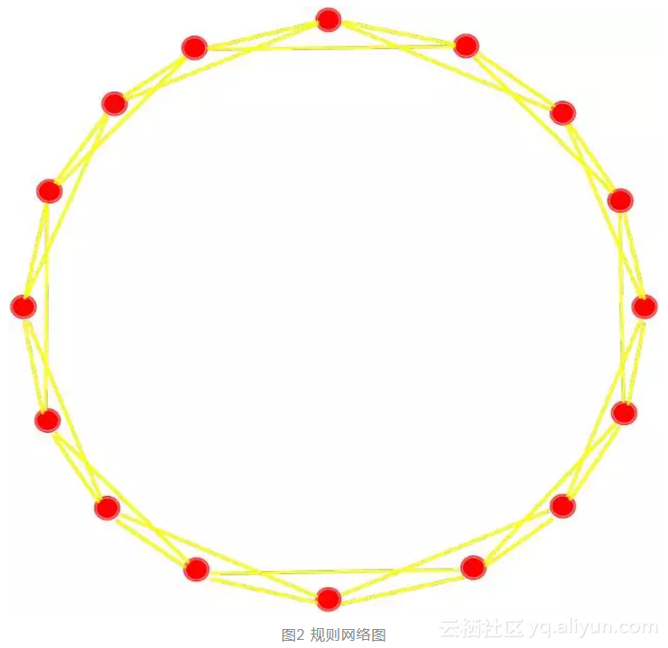
3.2 随机网络
从某种意义上讲，规则网络和随机网络是两个极端，而复杂网络处于两者之间。节点不是按照确定的规则连线，如按纯粹的随机方式连线，所得的网络称为随机网络。如果节点按照某种自组织原则方式连线，将演化成各种不同网络。
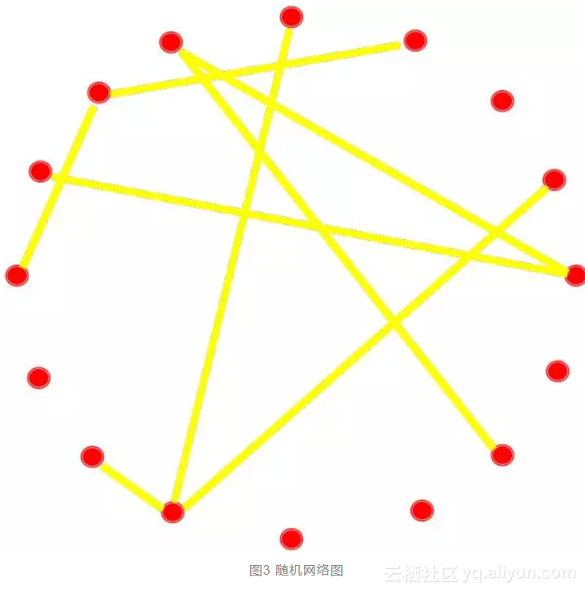
3.3 小世界网络
规则的最近邻耦合网络具有高聚类特性，但并不是小世界网络。另一方面，ER随机网络虽然具有小的平均路径长度但却没有高聚类特性。因此，这两类网络模型都不能再现真实网络的一些重要特征，毕竟大部分实际网络既不是完全规则的，也不是完全随机的。作为从完全规则网络向完全随机网络的过渡，Watts和Strogtz于1998年引入了一个小世界网络模型，称为WS小世界模型。
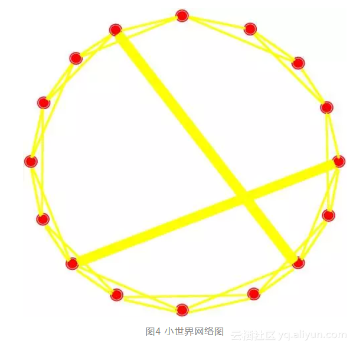
3.4 无标度网络
很多网络（包括Internet和新陈代谢网络等）都不同程度拥有如下共同特性：大部分节点只有少数几个链接，而某些节点却拥有与其他节点的大量链接，表现在度分布上就是具有幂律形式，即P(k)~k—γ。这些具有大量链接的节点称为“集散节点”，所拥有的链接数可能高达几百、几千甚至几百万。包含这种集散节点的网络，由于网络节点的度没有明显的特征长度，故称为无标度网络。
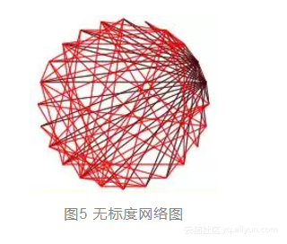
3.5 自相似网络
自相似是相似中的一种特殊情况，它是指系统的部分和整体之间具有某种相似性，这种相似性不是两个无关事物间的偶然近似，而是在系统中必然出现并始终保持的。这种自相似是层次复杂网络共有的拓扑性质，而自相似又是分型的一个基本特征，所以复杂系统与各层次子系统之间的自相似性，可以利用分形加以描述。
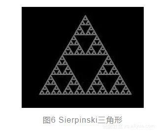
4. 复杂网络主要研究内容及应用
4.1 主要研究内容
复杂网络模型：
- 典型的复杂网络：随机网、小世界网、无标度网等；
- 实际网络及其分类。
网络的统计量及与网络结构的相关性：
- 度分布的定义和意义，聚集性、连通性的统计量及其实际意义等。
复杂网络性质与结构的关系：
- 同步性、鲁棒性和稳定性与网络结构的关系。
复杂网络的动力学：
- 信息传播动力学、网络演化动力学、网络混沌动力学。
复杂网络的复杂结构：
- 社团结构、层次结构、节点分类结构等。
网络控制：
- 关键节点控制、主参数控制和控制的稳定性和有效性。
复杂网络的一些应用：
社会网络：
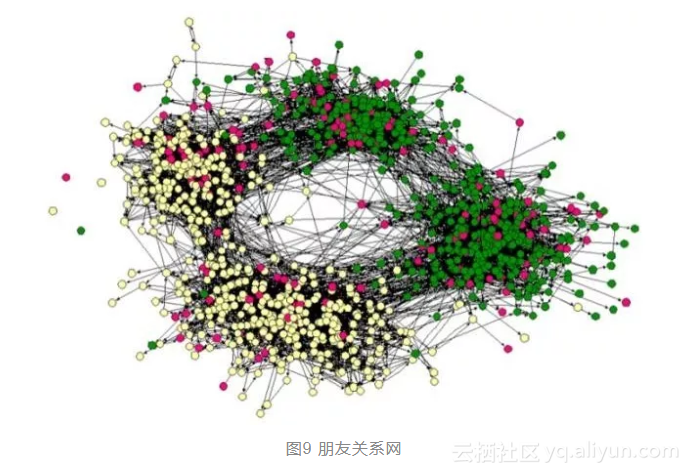
朋友关系网作为一种典型的社会网络，受到了复杂网络领域诸多学者的关注。顾名思义，朋友关系网是根据人们之间的朋友关系所建立的网络，以人为节点，两人之间若有朋友关系则连接一条边。一些学者之前对朋友关系网的研究也获得了许多成果。**[34]**
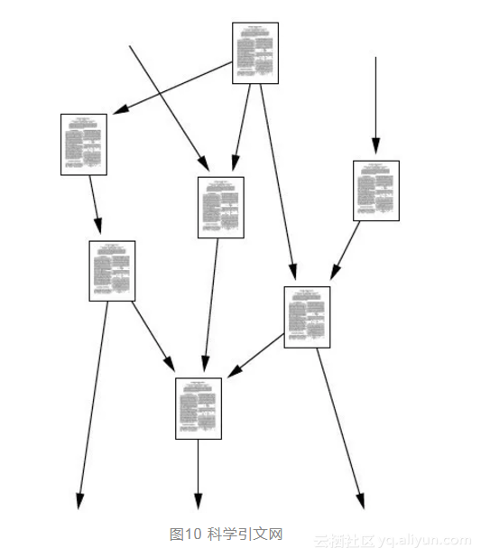
引文网络是体现知识生产、传播过程的一个重要方面。随着知识量的迅速增长，引文网络已经形成了一个超大规模的网络系统。然而，科学计量学领域中关于大型引文网络的研究还非常少，关于引文网络中知识生产和传播过程的研究更是少有涉及。
本文立足于科学学引文网络，整合复杂网络理论和社会网络分析方法，从宏观、微观和中观三个层面对科学学的引文网络进行研究，探讨网络的结构及其对知识的流动传播产生的影响。 对从SCI中下载的数据进行了权威控制并对其进行纠错，力图使研究最接近于真实情况。在此基础上对科学学引文网络的整体结构进行了研究，发现科学学引文网络同时具有复杂网络的“无标度”、“小世界”和“高集聚”的特性。科学学引文网络的整体结构适宜于知识快速流动，但是知识传播的路径还有待于进一步的优化。**[35]**
交通运输网络：
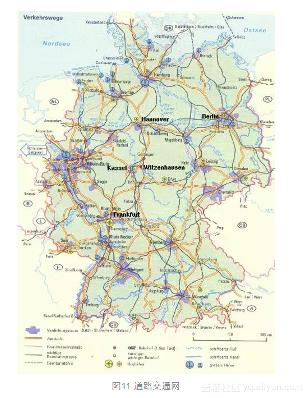
在城市道路交通网络中，于恶劣天气、交通事件等可能造成一个或少数关键路段或路口失效(如堵塞)，些失效路段或路口会通过路段、路口间的相互关联引起其它路段或路口失效，成连锁效应，终导致整个网络或局部崩溃，就是级联失效。**[36]**
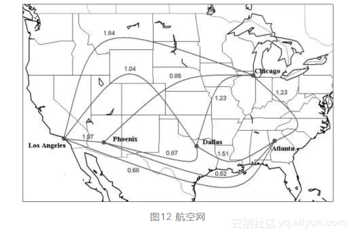
基于整个航空运输网络研究航班延误及其产生的次生衍生突发事件链式效应。以航班延误为中心，讨航班延误及其波及的发生发展过程，立基于阶段细分的航班延误波及模型；
根据导致航班延误的原因以及次生衍生事件链式效应规律，理由航班延误及其波及导致的下游航班或下游机场航班延误等一系列次生衍生事件链，建航班延误次生衍生事件链式网络；
通过建立航空运输网络结构，拟航班延误及其次生衍生事件链式效应的传播扩散过程，精确预测航班延误引发的次生衍生事件，量分析航班延误波及效应的影响程度。有助于民航应急管理部门有针对性地预防和管控航班延误可能发生的次生衍生事件，而有效地缓解由航班延误波及引发的次生衍生事件的后果与影响，低航班延误的损失。**[37]**
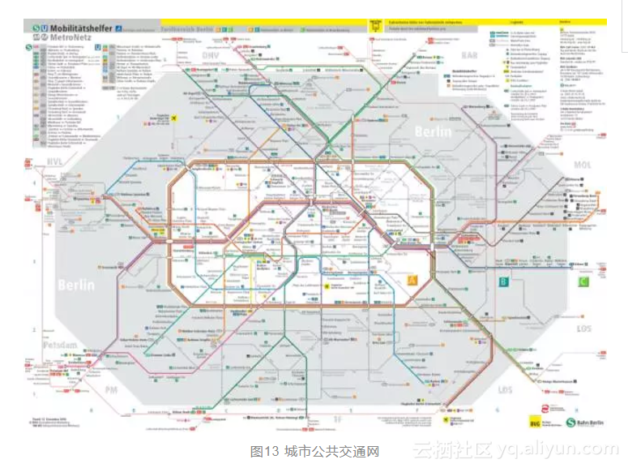
随着城市化进程的加速，人们出行日益增加，城市的交通拥堵问题越来越严重。公共交通是解决城市拥堵问题最为有效的途径，而城市公共交通网络容量是城市公共交通的一项重要研究。大量的研究如，如何定义城市公共交通网络容量；如何确定影响因素以及计算容量的大小。**[38]**
5. 复杂网络研究相关著作及论文
[1] 谢逢洁. 复杂网络上的博弈[M]. 清华大学出版社, 2016.
[2] 蒋忠元, 梁满贵. 复杂网络传输容量分析与优化[M]. 北京交通大学出版社, 2016.
[3] 孙玺菁, 司守奎. 复杂网络算法与应用[M]. 国防工业出版社, 2015.
[4] 李凤华, 熊金波. 复杂网络环境下访问控制技术[M]. 人民邮电出版社, 2015.
[5] 苏厚胜, 汪小帆. 复杂网络化系统的牵制控制:英文版[M]. 上海交通大学出版社, 2014.
[6] 张子柯. 大数据下复杂网络的机遇与挑战[M]. 科学出版社, 2014.
[7] 傅新楚, MichaelSmall, 陈关荣,等. 复杂网络传播动力学:模型、方法与稳定性分析[M]. 高等教育出版社, 2014.
[8] 陆再珍. 基于复杂网络理论的城市轨道交通系统[M]. 2013.
[9] 郭进利. 复杂网络和人类行为动力学演化模型[M]. 科学出版社, 2013.
[10] 何铮. 复杂网络在管理领域的应用研究[M]. 电子科技大学出版社, 2013.
[11] 陈关荣, 汪小帆, 李翔. 复杂网络引论[M]. 高等教育出版社, 2012.
[12] 郭世泽. 复杂网络基础理论[M]. 科学出版社, 2012.
[13] 王维红. 金融危机沿国际贸易网络跨国传播研究:基于复杂网络理论[M]. 企业管理出版社, 2012.
[14] 刘颖. 复杂网络视角下的知识传播[M]. 中国人民大学出版社, 2012.
[15] 温磊. 基于复杂网络的供应链建模与仿真研究[M]. 河北大学出版社, 2012.
[16] 刘健. 复杂网络社团结构的动力学方法研究[M]. 北京大学, 2011.
[17] 李岸巍. 细胞自动机及其在复杂网络中的应用[M]. 人民邮电出版社, 2011.
[18] 谭利. 复杂网络模型及应用研究[M]. 中南大学出版社, 2010.
[19] 吴建军. 城市交通系统复杂性:复杂网络方法及其应用[M]. 科学出版社, 2010.
[20] 谭玲玲. 中国煤炭需求复杂网络结构建模研究[M]. 经济管理出版社, 2009.
[21] 汪小帆. 复杂网络理论及其应用[M]. 清华大学出版社, 2006.
[22] 郭雷, 许晓鸣. 复杂网络[M]. 上海科技教育出版社, 2006.
[23] Hofman J M, Sharma A, Watts D J. Prediction and explanation in social systems.[J]. Science, 2017, 355.
[24] Newman, Barabasi, Watts. The Structure and Dynamics of Networks. Princeton University Press, 2006.
[25] S.Boccaletti, et al. Complex Networks: Structure and dynamics, Phys. Rep. 424 (2006) 175-308.
[26] E. Ben-Naim, et al. Complex Networks, Springer, 2004.
[27] S. N. Dorogovtesev, J.Mendes. Evolving of Networks, Oxford Un. Press, 2003.
[28] Ebel H, Mielsch L I, Bornholdt S. Scale-free topology of e-mail networks[J]. Phys Rev E Stat Nonlin Soft Matter Phys, 2002, 66(3 Pt 2A):035103.
[29] Albert R, Barabási A. Statistical mechanics of complex networks[J]. Review of Modern Physics, 2002, 74(1):47-97.
[30] Barabási A, Albert R. Emergence of Scaling in Random Networks[J]. Science, 1999, 286(5439):509-512.
[31] Watts D J, Strogatz S H. Collective dynamics of ‘small-world’ networks.[J]. Nature, 1998, 393(6684):440.
[32] 刘锋, 任勇, 山秀明. 互联网络数据包传输的一种简单元胞自动机模型[J]. 物理学报, 2002, 51(6):1175-1180.
[33] 王光增, 曹一家, 包哲静,等. 一种新型电力网络局域世界演化模型[J]. 物理学报, 2009, 58(6):3597-3602.
[34] 张恺, 马忠军, 李科赞. 朋友关系网络的实证统计研究[J]. 电子科技大学学报, 2014(3):336-341.
[35] 张美平. 科学引文网络分析及其应用研究[D]. 电子科技大学, 2015.
[36] 王正武, 王杰, 黄中祥. 控制城市道路交通网络级联失效的关闭策略[J]. 系统工程, 2016(2):103-108.
[37] 贾萌. 基于航空网络的航班延误次生衍生事件链式效应研究[D]. 南京航空航天大学, 2015.
[38] 刘岩, 邵岩, 王利杰,等. 城市公共交通网络容量研究[J]. 大连交通大学学报, 2015, 36(s1).
[39] 韩博平. 生态网络分析的研究进展[J]. 生态学杂志, 1993(6):41-45.
[40] 韩跃, 冀俊忠, 杨翠翠. 基于多标签传播机制的蛋白质相互作用网络功能模块检测[J]. 模式识别与人工智能, 2016, 29(6):548-557.
[41] 赵国振. 基于自组织神经网的复杂网络社区发现研究[D]. 吉林大学, 2015.